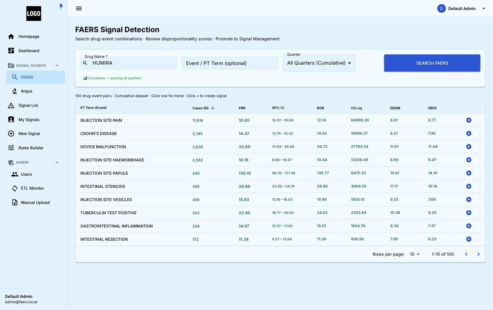
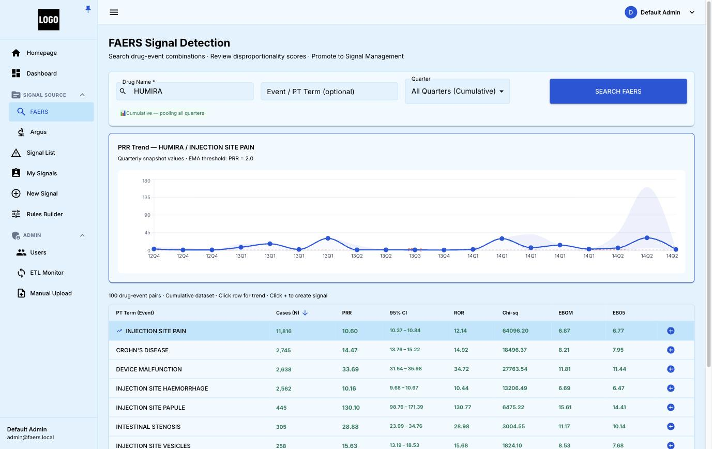
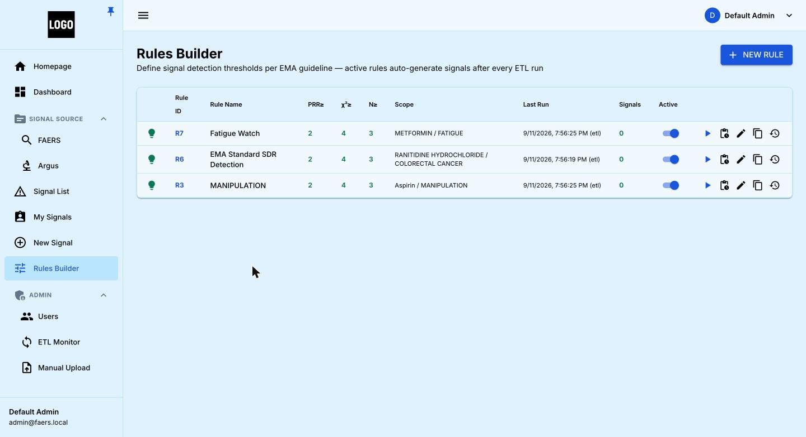
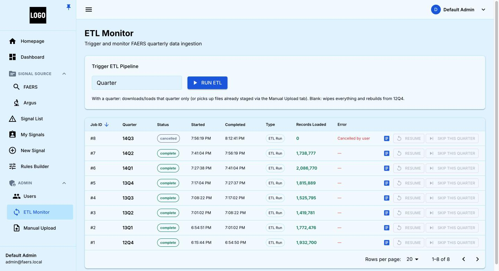
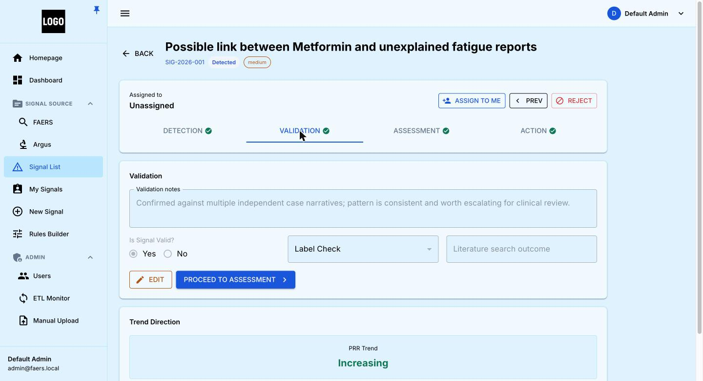
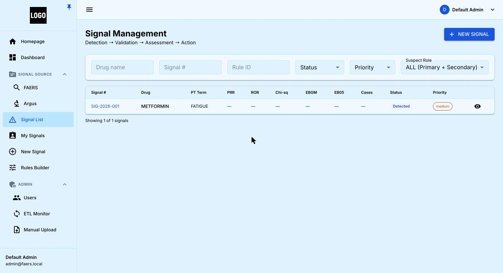
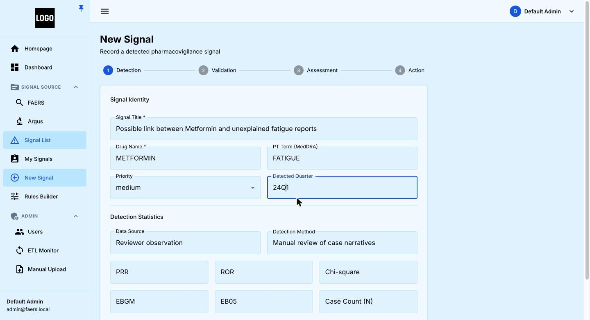

Products
FAERS Signal Manager
See a pattern. Confirm it's real. Decide what to do about it.
A pharmacovigilance signal detection platform that watches every drug and every side effect reported to the FDA, flags the combinations that stand out, and walks your team through reviewing, confirming, and acting on them — with a complete record of who decided what, and when.
It replaces spreadsheet-based review with a system built for millions of records, automatic quarterly checks, and enforced four-eyes review.
Schedule a Walkthrough
Key Features
Ranked drug–event search
Type-ahead on the real FDA terms, then every drug and side-effect combination on record, ranked so the ones that stand out rise to the top.
Trend over time
Click any row to see a quarter-by-quarter trend line and tell at a glance whether a pattern is growing or fading.
Standing watches
Save a search as a rule with plain thresholds. It re-checks itself automatically every quarter and raises a signal when it fires.
Automatic quarterly data loads
New FDA data is pulled in on its own, tracked end to end, and an interrupted load resumes exactly where it stopped.
Four-stage review journey
Detection, Validation, Assessment and Action — the person who clears one stage is never the one who clears the next.
One list, full audit trail
Every signal lives in one filterable list, with a permanent, time-stamped record of every decision and regulatory follow-up.
Screenshots






Screenshots show the application running against public FDA FAERS data. They illustrate how the product works and are not intended as safety findings about any drug shown.